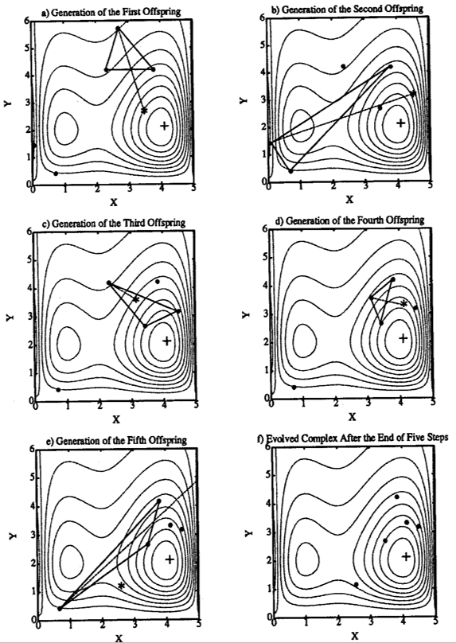

4 Expert module - Calibration algorithms
4.1 Introduction to the calibration module
The module Calibrator of the RS Expert frame has been implemented for calibrating the parameters of the hydrological model. This module uses an objective function defined by the user and different algorithms to solve it.
The first algorithm, the Shuffled Complex Evolution – University of Arizona (SCE-UA), is a global optimization method (Duan et al., 1992, 1993) based on a synthesis of the best features from several existing algorithms, including the genetic algorithm, and introduces the concept of complex information exchange, so-called complex shuffling. The SCE-UA method was designed for solving problems encountered in conceptual watershed model calibration (Hapuarachchi H.A.P. et al., 2001; Ajami et al., 2004; Muttil and Liong, 2004; Blasone et al., 2007), but has also been satisfyingly used in water resources management (Zhu et al., 2006; Lin et al., 2008; Wang et al., 2010).
The second algorithm is a variation of the Adaptive Markov Chain Monte Carlo, used since it can be interesting for solving complex problems in high dimensional spaces (Gilks et al., 1996; Liu, 2001). It has been modified to an Uniform Adaptative Monte Carlo (UAMC) in this program to adjust the solution space after a defined group of simulations up to the convergence of the optimization. Variations of the Monte Carlo method are usually used in hydrological problem for parameterization optimization (Vrugt and al., 2003; Jeremiah and al., 2012).
The third and last algorithm used in RS MINERVE is the Coupled Latin Hypercube and Rosenbrock (CLHR) It couples the Latin Hypercube algorithm (McKay et al., 1979) with the Rosenbrock algorithm (Rosenbrock, 1960), generating a powerful tool for optimization of complex problems. The latin hypercube algorithm has been usually used in hydrology for sampling the initial parameter space, combined the with other methods (van Griensven et al, 2006; Kamali et al., 2013). Rosenbrock algorithm has been also used for hydrological parameters optimisation (Abbot et Refsgaard, 1996) or optimization of numerical functions (Kang et al., 2011).
4.2 Objective function
A flexible objective function (OF) has been developed for the module of calibration aiming to be adapted to the user’s requirements. The indicators presented in Chapter 4 are used in this OF, each one weighted with a value defined by the user (Table 4.1).
| Indicator | Weight | Range of Values | Ideal value |
|---|---|---|---|
| Nash | w1 | -∞ to 1 | 1 |
| Nash-ln | w2 | -∞ to 1 | 1 |
| Pearson Correlation Coefficient | w3 | -1 to 1 | 1 |
| Kling-Gupta Efficiency (KGE) | w4 | -∞ to 1 | 1 |
| Bias Score (BS) | w5 | -∞ to 1 | 1 |
| Relative Root Mean Square Error (RRMSE) | w6 | 0 to +∞ | 0 |
| Relative Volume Bias (RVB) | w7 | -∞ to +∞ | 0 |
| Normalized Peak Error (NPE) | w8 | -∞ to +∞ | 0 |
| Peirce Skill Score (PSS) | w9 | -1 to 1 | 1 |
| Overall Accuracy (OA) | w10 | 0 to 1 | 1 |
The OF is presented in equation Equation 4.1 and takes into account the ideal values of each indicator. Thus, the OF searches to maximize the first five and last two indicators (Nash, Nash-ln, Pearson, Kling-Gupta, BS, PSS and OA) since their ideal value is equal to the maximum possible value and, at the same time, to minimize the value or the absolute value for the three other indicators (RRMSE, RVB, NPE) since their ideal value corresponds to zero.
\[ OF = max(Nash \cdot w_{1} + Nashln \cdot w_{2} + Pearson \cdot w_{3} + KGE \cdot w_{4} + BS \cdot w_{5} - RRMSE \cdot w_{6} - \left| RVB \cdot w_{7} \right| - \left| NPE \cdot w_{8} \right| + PSS \cdot w_{9} + OA \cdot w_{10}) \qquad(4.1)\]
4.3 Shuffled Complex Evoluation – University of Arizona
4.3.1 Model architecture
The Shuffled Complex Evolution – University of Arizona (SCE-UA) method was developed to obtain the traditional best parameter set and its underlying posterior distribution within a single optimization run. The goal is to find a single best parameter set in the feasible space. It starts with a random sample of points distributed throughout the feasible parameter space, and uses an adaptation of the Simplex Downhill search scheme (Nelder and Mead, 1965) to continuously evolve the population toward better solutions in the search space, progressively relinquishing occupation of regions with lower posterior probability (Mariani et al., 2011).
A general description of the steps of the SCE-UA method is given below (Duan et al., 1994) and illustrated in Figure 4.1.
Step 1
Generate sample: Sample NPT points in the feasible parameter space and compute the criterion value at each point. In the absence of prior information on the location of the global optimum, use a uniform probability distribution to generate a sample.
Step 2
Rank points: Sort the NPT points to increase criterion value so that the first point represents the point with the lowest criterion value and the last the one with the highest criterion value (assuming that the goal is to minimize the criterion value).
Step 3
Partition into complexes: Partition the NPT points into NGS complexes, each containing NPG points. The complexes are partitioned in such a way that the first complex contains every NGS (k-1)+1 ranked point, the second complex contains every NGS (k-1)+2 ranked point, and so on, where k = 1,2,...,NPG.
Step 4
Evolve each complex: Evolve each complex independently by taking NSPL evolution steps, according to the Competitive Complex Evolution (CCE) algorithm. Figure 4.3 illustrates how each evolution step is taken.
Step 5
Shuffle complexes: Combine the points in the evolved complexes into a single sample population; sort the sample population in order of increasing criterion value; re-partition or shuffle the sample population into NGS complexes according to the procedure specified in the third step.
Step 6
Check convergence: If any of the pre-specified convergence criteria are satisfied, stop; otherwise, continue.
Step 7
Check complex number reduction: If MINGS (the minimum number of complexes) < NGS, remove the complex with the lowest ranked points; set NGS=NGS-1 and NPT=NGS NPG; and return to Step 4. If MINGS=NGS, return to Step 4.
The SCE-UA method is explained in Figure 4.2 and Figure 4.3 for a two dimensional case (Duan et al., 1994). The contour lines in Figure 4.2 and Figure 4.3 represent a function surface having a global optimum located at (4,2) and a local optimum located at (1,2). Figure 4.2 (a) shows that a sample population containing NPT (=10) points is divided into NGS (=2) complexes. Each complex contains NPG (=5) points which are marked by • and * respectively. Figure 4.2 (b) shows the locations of the points in the two independently evolved complexes at the end of the first cycle of evolution. It can be seen that one complex (marked by *) is converging towards the local optimum, while the other (marked by •) is converging toward the global optimum. The two evolved complexes are shuffled according to step 5. Figure 4.2 (c) displays the new membership of the two evolved complexes after shuffling.
Figure 4.2 (d) illustrates the two complexes at the end of the second cycle of evolution. It is clear that both complexes are now converging to the global optimum at the end of second cycle.
The CCE algorithm is graphically illustrated in Figure 4.3. The black dots (•) indicate the locations of the points in a complex before the evolution step is taken. A sub-complex containing NPS (=3, i.e. forms a triangle in this case) points is selected according to a pre-specified probability distribution to initiate an evolution step.
The probability distribution is specified such that the better points have a higher chance of being chosen to form the sub-complex than the worse points. The symbol (*) represents the new points generated by the evolution steps. There are three types of evolution steps: reflection, contraction and mutation.
Figure 4.3 (a), Figure 4.3 (b) and Figure 4.3 (d) illustrate the "reflection" step, which is implemented by reflecting the worst point in a sub-complex through the centroid of the other points. Since the reflected point has a lower criterion value than the worst point, the worst point is discarded and replaced by the new point. Thus an evolution step is completed.
In Figure 4.3 (c), the new point is generated by a "contraction" step (the new point lies half-way between the worst point and the centroid of the other points), after rejecting a reflection step for not improving the criterion value.
In Figure 4.3 (e), a "mutation" step is taken by random selection of a point in the feasible parameter space to replace the wrong point of the sub-complex. This is realized after a reflection step is attempted, but results in a wrong point, i.e. outside of the feasible parameter space. Another scenario in which a mutation step is taken is when both the reflection step and the contraction step do not improve the criterion value.
Finally, the Figure 4.3 (f) shows the final complex after NSPL (=5) evolution steps.

4.3.2 Algorithm parameters
Different parameters of the SCE-UA have to be defined by the user (Table 4.2), as presented hereafter, and other parameters are directly calculated by the process.
An initial set of Nopt parameters is given by the user or is assumed as random depending on the user’s needs and the used hydrological models. The other NPT-1 points (or parameters sets) are randomly created by the algorithm, depending on a SEED value. The number of points NPG in each complex corresponds to 2 Nopt+1 and the number of points NPS in each sub-complex to Nopt+1 (It has to be noted that each point corresponds to a set of parameters). The number of evolution steps allowed for each complex before complex shuffling, NSPL, is equal to NPG. The number of complexes is defined as NGS, which is assumed equal to MINGS according to the Duan investigation (Duan et al., 2004). Then, the total number of points NPT in the entire sample population is NGS NPG.
Three different convergence criteria are defined by the user:
The maximum number of function evaluations (or iterations) MAXN.
The number of shuffling loops (KSTOP) in which the criterion value must change by a fixed percentage (PCENTO) before optimization is finished.
The PEPS parameter which provides a flag indicating whether parameter convergence is reached (It compares the value of PEPS with the normalized geometric mean of parameter ranges).
| Name | Units | Description | Default Value |
|---|---|---|---|
| MAXM | - | Maximum number of iterations | 10000 |
| NGS | - | Number of complexes | 3 |
| KSTOP | - | Number of shuffling loops | 10 |
| PCENTO | - | Criterion value on shuffling loops | 0.1 |
| PEPS | - | Convergence parameter | 0.001 |
| SEED | - | Seed value | Random |
4.4 Uniform Adaptive Monte Carlo
4.4.1 Model architecture
The Uniform Adaptive Monte Carlo (UAMC) algorithm is based on the Monte Carlo experiments that rely on repeated random sampling to obtain simulation results (Gilks et al., 1996; Liu, 2001) ; but has been modified in order to iteratively adjust the solution space.
The algorithm randomly launches a collection of simulations (block) and finds the better results in the solution space. Afterwards, the solution space is adjusted and a new group of simulations starts. The process is repeated until the optimization converges to the best set of parameters (Figure 4.4).
4.4.2 Algorithm parameters
Different parameters of the UAMC algorithm have to be defined by the user (Table 4.3), as presented hereafter.
A number of iterations ITGR per group is defined for the optimization. Random values of parameters are used for each iteration of the group based on a SEED value. Once the first group of iterations is finished, a number NUMBEST of best values is applied for calculating the solutions space range for the next group of iterations. This solution space takes into account the minimum and the maximum values of each parameter providing the best values and adds an additional range COEFRANG.
Finally, the optimization finishes when the convergence criterion (defined as ERR) is achieved, or when the maximum number of iterations MAXN is attained.
| Name | Units | Description | Default Value |
|---|---|---|---|
| MAXN | - | Maximum number of iterations | 2000 |
| ITGR | - | Number of iterations per group | 100 |
| NUMBEST | - | Number of best values taken into account for the next group calculation | 5 |
| COEFRANG | - | Additional range coefficient | 0.1 |
| ERR | - | Error difference until convergence | 0.001 |
| SEED | - | Seed value | Random |

4.5 Coupled Latin Hypercube and Rosenbrock
4.5.1 Model architecture
The Coupled Latin Hypercube (McKay et al., 1979) and the Rosenbrock algorithm (Rosenbrock, 1960), called hereafter CLHR, generates a powerful tool for optimization of complex problems. This combined algorithm can discretize a wide domain and then narrow your search to smaller sectors (Figure 4.5). Scanning of the space of possible solutions is performed by the Latin Hypercube. This algorithm allows pseudo-statistical sampling conditioned by the previous calculated solutions. The Latin hypercube is an evolution of Monte Carlo method, with more homogeneous samples achieved with fewer samples. An important advantage of this method is that the dimension of the problem is defined by the division of the latin hypercube and not by the number of parameters.
The best results from samples become the starting points required for Rosenbrock algorithm. The advantage of this subroutine calculation lies in the speed to obtain near optimal values. This algorithm is based on a gradient search, adjusting axis changes based on the direction of maximum enhancement, thus reducing the number of evaluations of the objective function.

A general description of the steps of the CLHR method is given below:
Step 1
Generate sample: Generation and evaluation of a pseudorandom sample by a Latin hypercube within the feasible parameter space. If the size of the hypercube is greater, uncertainty is reduced within the domain of search.
Step 2
Rank points: The results obtained in the first step are ordered (Figure 4.6). The best results from the Latin hypercube algorithm will serve as starting points to launch the Rosenbrock algorithm.

Step 3
Launch of Rosenbrock: Rosenbrock algorithm starts at least once. This subroutine searches around the starting point the values that improve the objective function. Depending on whether the objective function improves or worsens, the parameters values are changed to advance or backward.
Step 4
Axes change: Axes are changed to orient the Cartesian axes to the direction of maximum improvement. For applying this change of axes, it should have obtained worse results in all directions of search and at least an improvement in one of these directions (remember each direction has 2 ways).
Step 5
The best result of all Rosenbrock releases is stored.
4.5.2 Algorithm parameters
Number of tests with the latin hypercube algorithm is equal to the parameter DivLH (≥ 2).The SEED is responsible for generating the randomness of the sample.
The RLAUNCHES (1≥RLAUNCHES≤DivLH) best results from the Latin Hypercube algorithm are used as starting points for the Rosenbrock algorithm.
The ALPHA coefficient represents the increment in the direction of search if the objective function improves. The BETA coefficient represents the movement if a worse result is obtained.
The STEPROS parameter indicates the subdivisions for each parameter’s range. It is used to calculate value variations in each of the parameters (∆i) to be studied, as presented in equation Equation 4.2.
\[ \frac{MaxP{arameterValue}_{i} - Min{ParameterValue}_{i}}{STEPROS} = \mathrm{\Delta}_{i} \qquad(4.2)\]
The optimization finishes when the convergence criterion (defined as ERR) is achieved, or when the maximum number of iterations MAXN is attained.
| Name | Units | Description | Default Value |
|---|---|---|---|
| MAXN | - | Maximum number of iterations | 2000 |
| DivLH | - | Latin hypercube division | 50 |
| SEED | - | Seed value | Random |
| RLAUNCHES | - | Rosenbrock algorithm launches | 2 |
| ALPHA | - | Advance coefficient | 3 |
| BETA | - | Backward coefficient | -0.5 |
| STEPROS | - | Parameter range subdivision | 40 |
| ERR | - | Convergence parameter | 0.001 |